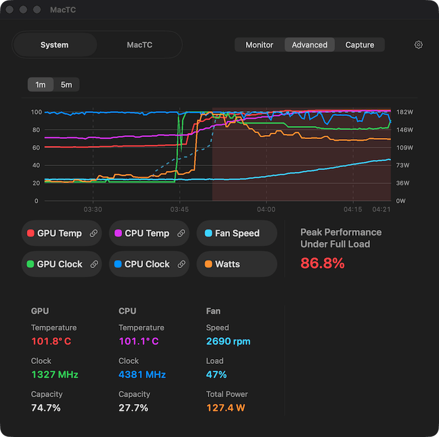

FREE FOREVER
The GUI window is a utility.
Open the window whenever you want current temperatures, clocks, fan behavior, and the live graph. If you just want visibility into what your Mac is doing, that stays free.
THERMAL CONTROL FOR REAL WORKLOADS
Most Macs are making the right tradeoff most of the time. MacTC is for the workloads where staying quieter starts giving up speed you would rather keep. It changes fan behavior to pursue lower operating temperatures during sustained work, typically with more fan activity and more fan noise.
The GUI window is free forever. Purchase unlocks the background fan control. Purchases are handled inside the app.
FREE WINDOW, PAID CONTROL
MacTC has a free utility window and a paid background fan-control mode in the same app. The window shows you what is happening right now. The paid side is the control logic that can live quietly in the menu bar and keep working in the background.

FREE FOREVER
Open the window whenever you want current temperatures, clocks, fan behavior, and the live graph. If you just want visibility into what your Mac is doing, that stays free.
THE PRODUCT
That is the part that can live in the menu bar, run indefinitely in the background, and change fan behavior when you want the more aggressive tradeoff. Buy only if that control proves useful on your machine.
THE BACKSTORY
I realized I was not enjoying the performance I had paid for. The full story is here if you care about the path from that realization to MacTC.
I've been using a number of LLMs on my M4 Max
MacBook Pro using the amazing
LM Studio. I noticed some sustained workloads seemed to get
slower and slower. This is easy to detect in an LLM
harness like LM Studio where it can show you the
tokens per second (t/s) rate after every response.
When I ran a bunch of queries back to back on some
models, the fans would spin up as expected, but I
noticed my t/s falling off substantially. Using the
outstanding
mactop
tool (brew install mactop), I
immediately saw that the GPU clock speed was
starting at 100%, and then progressively dropping
several minutes into long-running jobs. While I had
paid an extra $300 to jump from the available
32-core GPU to 40 cores, under a few minutes of
heavy load, I was left with a 24-core GPU's worth
of performance!
I experimented with some of the available Mac apps for adjusting the fans. What I found was that for my GPU-heavy LLM workloads, the set-it-and-forget-it fan options were sometimes needlessly noisy and yet still wouldn't prevent all thermal throttling in cases where just blasting the fans at 100% did help. Nobody wants a noisy machine, and Apple did a fantastic job with their tradeoffs, to a point. But I wanted the performance I bought, and if achieving that was sometimes louder, that was the trade-off I was willing to make.
After a lengthy investigation of how my system handled power, heat, clocks, and fans, I found that the "fixed fan % based on temp" model is simply unsuited for heavy loads lasting more than a few minutes. The system has an inherent notion of the thermal soak properties of the SoC. In practice this means my Mac was quite lazy about ramping up the fans initially even when the CPU/GPU shot past 90°C, and it did not throttle speeds early. But if that heat load continues for a couple minutes, the fans will happily sit at (in my particular system's case) 62% of max fan speed while reducing the clock speeds and hence performance.
That is the problem I set out to solve for at least some workloads with MacTC. It defers to the system's fan choices by default, but when it observes power and heat rising, it should attempt to front-run that heat debt with more fan earlier, while still being as quiet as possible. And when thermal throttling begins, it will take the fans to full speed only for as long as it takes to end the throttling, and then attempt to fall off to the lowest fan speed that can sustain full performance. And even when it does run the fans full blast, it tries not to slam them straight to 100%. It tries to ramp up and down over a few seconds. In normal use, this will tend to give the experience of noticing "oh my fans are on," versus "wow my fans just came on." Nobody wants to be annoyed by fan noise, but for anyone who finds the idea of running slowly when it might be prevented, MacTC is for you.
PRODUCT CAVEATS
The GUI window is free forever. The paid product is the background fan control that can run in the background and live in the menu bar.
When that control is enabled, MacTC changes fan behavior to pursue lower operating temperatures, typically with more fan activity and more fan noise. Results vary by Mac model, firmware, workload, sensors, ambient conditions, and system state. No fan-control policy can guarantee better thermal or performance outcomes in every circumstance, and in rare or unforeseen cases MacTC may be less effective than intended or may worsen thermal behavior.
WHY IT FEELS DIFFERENT
MacTC does not assume Apple's default behavior is wrong for everyone. It watches for rising power, heat, and soak before it becomes more aggressive.
The goal is to front-run the kind of sustained load that can drag clocks down later, while still accepting that results vary and better outcomes are not guaranteed in every circumstance.
When MacTC does need more fan, it aims to climb over a few seconds and back off once performance settles, rather than living at full blast all the time.
WORKFLOW
Open MacTC during a long local model run, build, or render and use the free GUI to see what your machine is doing in real time.
That is the paid side: the fan-control logic that can keep watching the workload contour and react when sustained heat starts costing speed.
Buy only if the background fan control proves worthwhile for your machine, your workload, and your tolerance for more fan noise.